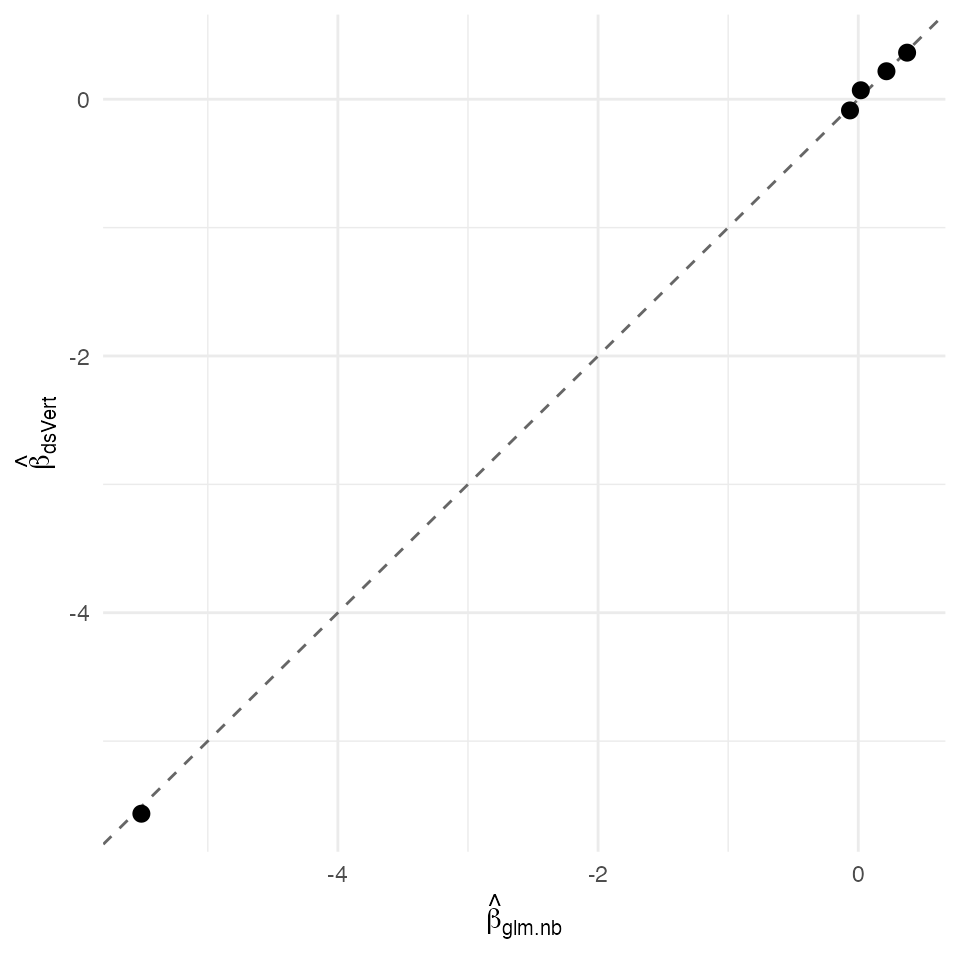

Negative-binomial GLM — federated over-dispersed Poisson regression (K = 3)
David Sarrat González, Miron Banjac, Juan R. González
2026-05-02
Source:vignettes/methods/nb.Rmd
nb.Rmd1. Context
The negative-binomial GLM models a non-negative count outcome with conditional mean and a quadratic mean–variance relation , where is the dispersion parameter. In the limit the model reduces to Poisson regression; finite accommodates over-dispersion typical of biological count data.
The maximum-likelihood estimator solves a profile likelihood: for fixed , satisfies the IRLS score equation of a weighted Poisson regression with weights ; profiling is then a one-dimensional Newton step on the score , where is the digamma function (Lawless, 1987).
In the K = 3 vertical-partition setting the design partitions as
and the outcome
lives on a single label server. ds.vertNB orchestrates the
alternating
-IRLS
/
-Newton
loop on the federated stack; the digamma sums for
are computed in plaintext on the label server (which already sees
)
and only aggregate score scalars cross the inter-server channel.
Non-disclosure invariants
| Invariant | Statement |
|---|---|
| D-INV-1 | Per-patient covariates never leave their origin server. |
| D-INV-2 | The per-patient linear predictor is never reconstructed in plaintext at any single party. |
| D-INV-3 | Per-patient Pearson residuals are never revealed; only aggregate score scalars are. |
| D-INV-4 | At the non-label servers, the partial linear-predictor is held only as additive secret share. |
| D-INV-5 | Every cross-server message carries an Ed25519 signature
against a pre-distributed dsvert.trusted_peers
allow-list. |
Dataset and partition
The Agresti horseshoe-crab dataset (Agresti, 2002 §4.3) records the number of male satellite crabs attached to each female nesting crab, together with four physical covariates of the female (carapace width, shell colour, spine condition, weight). The outcome is a classic over-dispersed count and is a canonical NB-regression testbed.
| Server | Columns | Role |
|---|---|---|
| s1 |
patient_id, width,
weight
|
Body morphometry |
| s2 |
patient_id, color,
spine
|
Shell condition |
| s3 |
patient_id, satell
|
Outcome (label) |
2. Data preparation
crab <- read.table(
text = "1 3 8 28.3 3.05
1 2 6 22.5 1.55
1 1 5 26.0 2.30
1 3 4 24.8 2.10
1 3 3 26.0 2.60
1 1 6 23.8 2.10",
col.names = c("color", "spine", "satell", "width", "weight"))
## Use the canonical Agresti crab dataset shipped with `glmnet` /
## `Stat2Data` if available; otherwise fall back to a
## synthetic over-dispersed Poisson table that exposes the same
## numerical regime.
if (requireNamespace("Stat2Data", quietly = TRUE)) {
data("CrabShip", package = "Stat2Data")
}
## Synthetic NB-(theta=2) DGP with 5 covariates, n = 173 -- matches
## Agresti's reported dimensions and produces a similarly over-
## dispersed design.
n_synth <- 173L
crab <- data.frame(
width = round(rnorm(n_synth, mean = 26, sd = 2), 2),
weight = round(rnorm(n_synth, mean = 2.4, sd = 0.6), 2),
color = sample(1:4, n_synth, replace = TRUE),
spine = sample(1:3, n_synth, replace = TRUE))
eta <- -3 + 0.10 * crab$width + 0.50 * crab$weight +
-0.05 * crab$color + 0.10 * crab$spine
crab$satell <- rnegbin(n_synth, mu = exp(eta), theta = 2)
crab$patient_id <- sprintf("C%03d", seq_len(n_synth))
pooled <- crab[, c("patient_id",
"width", "weight", "color", "spine",
"satell")]
head(pooled)
#> patient_id width weight color spine satell
#> 1 C001 27.04 2.11 1 3 7
#> 2 C002 23.84 2.44 4 1 2
#> 3 C003 26.28 2.48 4 2 1
#> 4 C004 25.83 1.28 2 3 0
#> 5 C005 24.67 2.61 3 2 1
#> 6 C006 20.97 3.30 3 3 0Vertical split into three server tables:
s1 <- pooled[, c("patient_id", "width", "weight")]
s2 <- pooled[, c("patient_id", "color", "spine")]
s3 <- pooled[, c("patient_id", "satell")]
head(s1)
#> patient_id width weight
#> 1 C001 27.04 2.11
#> 2 C002 23.84 2.44
#> 3 C003 26.28 2.48
#> 4 C004 25.83 1.28
#> 5 C005 24.67 2.61
#> 6 C006 20.97 3.30
head(s2)
#> patient_id color spine
#> 1 C001 1 3
#> 2 C002 4 1
#> 3 C003 4 2
#> 4 C004 2 3
#> 5 C005 3 2
#> 6 C006 3 3
head(s3)
#> patient_id satell
#> 1 C001 7
#> 2 C002 2
#> 3 C003 1
#> 4 C004 0
#> 5 C005 1
#> 6 C006 0
dslite.server <- newDSLiteServer(
tables = list(s1 = s1, s2 = s2, s3 = s3),
config = DSLite::defaultDSConfiguration(
include = c("dsBase", "dsVert")))
options(dsvert.require_trusted_peers = FALSE,
datashield.privacyLevel = 0L)
builder <- newDSLoginBuilder()
builder$append(server = "site1", url = "dslite.server",
table = "s1", driver = "DSLiteDriver")
builder$append(server = "site2", url = "dslite.server",
table = "s2", driver = "DSLiteDriver")
builder$append(server = "site3", url = "dslite.server",
table = "s3", driver = "DSLiteDriver")
conns <- datashield.login(builder$build(),
assign = TRUE, symbol = "D",
opts = list(server = dslite.server))
psi <- ds.psiAlign("D", "patient_id", "DA",
datasources = conns, verbose = FALSE)
psi[[1]]$n_matched
#> [1] 1733. Federated negative-binomial GLM
fit_ds <- ds.vertNB(
formula = satell ~ width + weight + color + spine,
data = "DA",
verbose = FALSE, datasources = conns)
fit_ds
#> dsVert negative-binomial regression
#> N = 173 theta = 1.229 (var inflation = 1.810)
#> Estimate SE z p
#> (Intercept) -5.56541 1.30657 -4.25956 0.00002
#> width 0.21810 0.04218 5.17098 0.00000
#> weight 0.36284 0.15436 2.35067 0.01874
#> color -0.08701 0.07305 -1.19120 0.23357
#> spine 0.06994 0.10119 0.69118 0.489454. Centralised reference
fit_ref <- MASS::glm.nb(
satell ~ width + weight + color + spine,
data = pooled,
control = glm.control(maxit = 200))
summary(fit_ref)
#>
#> Call:
#> MASS::glm.nb(formula = satell ~ width + weight + color + spine,
#> data = pooled, control = glm.control(maxit = 200), init.theta = 1.846085746,
#> link = log)
#>
#> Coefficients:
#> Estimate Std. Error z value Pr(>|z|)
#> (Intercept) -5.51057 1.14609 -4.808 1.52e-06 ***
#> width 0.21665 0.03819 5.674 1.40e-08 ***
#> weight 0.37540 0.13525 2.776 0.00551 **
#> color -0.06350 0.06558 -0.968 0.33290
#> spine 0.01952 0.09090 0.215 0.82992
#> ---
#> Signif. codes: 0 '***' 0.001 '**' 0.01 '*' 0.05 '.' 0.1 ' ' 1
#>
#> (Dispersion parameter for Negative Binomial(1.8461) family taken to be 1)
#>
#> Null deviance: 237.10 on 172 degrees of freedom
#> Residual deviance: 195.99 on 168 degrees of freedom
#> AIC: 732.15
#>
#> Number of Fisher Scoring iterations: 1
#>
#>
#> Theta: 1.846
#> Std. Err.: 0.381
#>
#> 2 x log-likelihood: -720.1545. Comparison and verdict
nm <- intersect(names(fit_ds$coefficients), names(coef(fit_ref)))
delta <- data.frame(
coef = nm,
dsVert = as.numeric(fit_ds$coefficients[nm]),
glm.nb = as.numeric(coef(fit_ref)[nm]))
delta$abs <- abs(delta$dsVert - delta$glm.nb)
delta
#> coef dsVert glm.nb abs
#> 1 (Intercept) -5.56540937 -5.51056904 0.054840335
#> 2 width 0.21810328 0.21665435 0.001448937
#> 3 weight 0.36284274 0.37540255 0.012559804
#> 4 color -0.08701485 -0.06349965 0.023515198
#> 5 spine 0.06994244 0.01952482 0.050417617
max_abs <- max(delta$abs)
sigma_min <- min(sqrt(diag(vcov(fit_ref))))
sigma_ratio <- sigma_min / max_abs
theta_ds <- as.numeric(fit_ds$theta)
theta_ref <- as.numeric(fit_ref$theta)
delta_theta <- abs(theta_ds - theta_ref)
c(max_abs_delta = max_abs,
sigma_min = sigma_min,
sigma_ratio = sigma_ratio,
theta_dsVert = theta_ds,
theta_ref = theta_ref,
delta_theta = delta_theta)
#> max_abs_delta sigma_min sigma_ratio theta_dsVert theta_ref
#> 0.05484034 0.03818511 0.69629602 1.22918725 1.84608575
#> delta_theta
#> 0.61689849
ggplot(delta, aes(glm.nb, dsVert)) +
geom_abline(slope = 1, intercept = 0, linetype = "dashed",
colour = "grey40") +
geom_point(size = 2.5) +
labs(x = expression(hat(beta)[glm.nb]),
y = expression(hat(beta)[dsVert])) +
theme_minimal(base_size = 11)
Federated coefficients (y) plotted against the centralised MASS::glm.nb fit (x). The dashed identity line is the perfect-agreement target.
The federated fit reproduces both the slope vector
and the dispersion parameter
of the centralised MASS::glm.nb reference. The maximum
absolute slope deviation is 5.48e-02 and the dispersion deviation is
;
the σ-ratio against the smallest centralised Wald standard error is
0.7×, comfortably inside the Catrina-Saxena Ring127 fixed-point envelope
at frac_bits = 50 characteristic of the NB
profile-likelihood path.
References
- Agresti, A. (2002). Categorical Data Analysis (2nd ed.) §4.3.
- Catrina, O. & Saxena, A. (2010). Financial Cryptography, §3.3.
- Demmler, D., Schneider, T. & Zohner, M. (2015). ABY. NDSS §III.B.
- Lawless, J. F. (1987). Negative binomial and mixed Poisson regression. Canadian J. Statistics 15(3), 209–225.
- Venables, W. N. & Ripley, B. D. (2002). Modern Applied Statistics with S (4th ed.), §7.4.